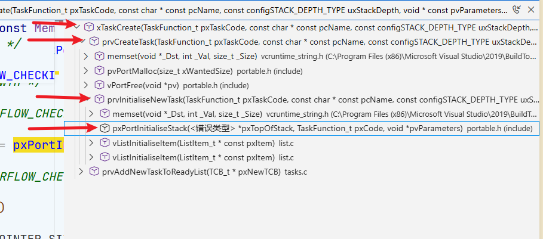
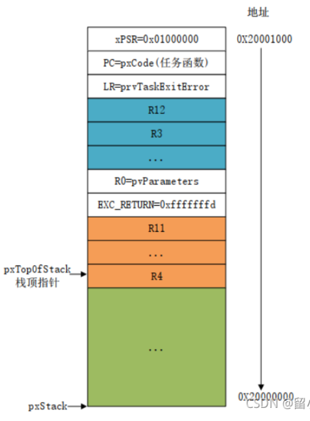

版权信息
warning
本文章为博主原创文章。遵循 CC 4.0 BY-SA 版权协议，转载请附上原文出处链接和本声明。
1. 从栈的角度来看RTOS整体
从 RTOS 的宏观视角来看，栈的核心作用可以归结为以下四个维度：
1.1 任务独立性的根本
——一任务一栈。
在裸机系统里，整个系统只有一个大循环，所有的函数共享同一个巨大的系统栈。 但在 RTOS 中，最大的特点是“多任务并发”。为了让每个任务都感觉自己独占了整个 CPU，RTOS 必须为每一个创建的任务分配一块完全独立、私有的栈内存。
- 当你在 FreeRTOS 中调用
xTaskCreate()时，传入的参数之一就是“栈深度（Stack Size）”。 - 任务的局部变量、嵌套调用的函数现场，全都保存在它自己的这块私有领地里。没有这块私有栈，所谓的“多任务”就无从谈起。
1.2 上下文切换的载体
——最核心的作用。
当发生任务切换时（例如经过了一个 SysTick，或者任务 A 主动调用 vTaskDelay）：
-
冻结现场（压栈）： 硬件和 RTOS 的底层汇编代码，会强行把当前 CPU 里的所有通用寄存器（R0-R12, LR, PC, xPSR 等）全部一股脑压入 任务 A 的私有栈 中。
-
保存指针： RTOS 把当前任务 A 压栈后最新的栈指针（SP）的值，保存到任务 A 的 任务控制块（TCB, Task Control Block） 里。
-
切换指针： RTOS 找到优先级最高的就绪任务 B，从任务 B 的 TCB 中取出它上次保存的栈指针（SP）值，强行塞给 CPU 的 SP 寄存器。
-
解冻现场（出栈）： CPU 现在指向了任务 B 的私有栈。执行一次出栈操作，把栈里保存的旧寄存器值全部弹出到 CPU 核心里。
-
恢复执行： PC（程序计数器）被恢复，系统瞬间穿越回了任务 B 上次被暂停的地方继续执行。
1.3 中断栈与任务栈的物理隔离
——双栈机制，节省 RAM。Cortex-M使用了这种机制。记住要考
-
让所有的普通任务使用 PSP（进程栈）。一旦发生硬件中断，CPU 自动切换到 MSP（主栈）。
-
好处： 中断服务函数（ISR）运行产生的局部变量和嵌套压栈，全部消耗在 MSP 对应的那块系统全局栈上。因此，你给任务分配栈大小时，只需要考虑该任务自身的业务逻辑深度，完全不需要为任何中断预留空间。 这极大地节省了总内存。
1.4 检测系统稳定性
由于每个任务的栈大小在创建时就被写死了（静态分配或从 RTOS 堆中分配固定大小），如果任务内部定义了太大的局部数组（比如 char buf[2048];），或者递归调用太深，就会导致栈溢出（Stack Overflow）。 溢出的数据会直接篡改相邻任务的栈或者系统数据，导致极其诡异的 HardFault（硬件错误）。
- RTOS 通常会利用栈来做健康监测。比如 FreeRTOS 会在任务栈的末尾填充特定的魔术字（如
0xA5）。RTOS 在空闲时会去检查这个魔术字有没有被覆盖。如果被覆盖了，说明该任务踩界了，立刻触发vApplicationStackOverflowHook报错死机，以防系统带病运行。
2. 创建任务的内部细节
2.1 任务的实体（TCB -Task Control Block）
任务在 FreeRTOS的体现就是一个结构体，也可以说是一个任务类（面向对象的说法）。
在 tasks.c 的头部，你可以找到 tskTCB 结构体的定义。把那些杂七杂八的条件编译宏全删了，核心只剩下这几行：
typedef struct tskTaskControlBlock
{
volatile StackType_t *pxTopOfStack; /* 指向任务栈的当前栈顶。绝对的核心！并且必须放在结构体的第一个位置 */
ListItem_t xStateListItem; /* 状态节点：用来把任务挂到就绪链表或阻塞链表 */
ListItem_t xEventListItem; /* 事件节点：用来把任务挂到事件（如队列、信号量）等待链表 */
UBaseType_t uxPriority; /* 任务优先级 */
StackType_t *pxStack; /* 指向任务栈的起始地址（用于销毁任务时释放内存，或栈溢出检测） */
char pcTaskName[ configMAX_TASK_NAME_LEN ]; /* 任务名字，主要用于调试 */
} tskTCB;此节我们聚焦于 pxTopOfStack 和 pxStack。
2.2 当我们在创建任务时我们在做什么？
在 tasks.c 找到创建任务函数原型：
BaseType_t xTaskCreate( TaskFunction_t pxTaskCode,
const char * const pcName,
const configSTACK_DEPTH_TYPE uxStackDepth,
void * const pvParameters,
UBaseType_t uxPriority,
TaskHandle_t * const pxCreatedTask )官方文档对参数的释义如下：
-
pvTaskCode
指向任务入口函数的指针（即实现任务的函数名称，请参阅如下示例）。 任务通常以无限循环的形式实现；实现任务的函数 绝不能尝试返回或退出。但是，任务可以 自行删除。
-
pcName
任务的描述性名称。此参数主要用于方便调试，但也可用于 获取任务句柄。任务名称的最大长度 由 FreeRTOSConfig.h 中的 configMAX_TASK_NAME_LEN 定义。
-
uxStackDepth
要分配用作任务堆栈的字数（不是字节数！）。例如，如果 堆栈宽度为 16 位，uxStackDepth 为 100，则将分配 200 字节用作任务 堆栈。再举一例，如果堆栈宽度为 32 位，uxStackDepth 为 400， 则将分配 1600 字节用作任务堆栈。堆栈深度与堆栈宽度的乘积不得超过 size_t 类型变量所能包含的最大值。请参阅 常见问题：堆栈应该多大？。
-
pvParameters
作为参数传递给所创建任务的值。如果 pvParameters 设置为某变量的地址， 则在创建的任务执行时，该变量必须仍然存在， 因此，不能传递堆栈变量的地址。
-
uxPriority
创建的任务将以该指定优先级执行。支持 MPU 的系统 可以通过在 uxPriority 中设置 portPRIVILEGE_BIT 位来选择以特权（系统）模式创建任务。 例如，要创建优先级为 2 的特权任务，请将 uxPriority 设置为 ( 2 | portPRIVILEGE_BIT )。应断言优先级 低于 configMAX_PRIORITIES。如果 configASSERT 未定义，则优先级默认上限为 (configMAX_PRIORITIES - 1)。
-
pxCreatedTask
用于将句柄传递至由 xTaskCreate() 函数创建的任务。pxCreatedTask 是可选参数， 可设置为 NULL。
返回：
- 如果任务创建成功，则返回 pdPASS，
- 否则返回 errCOULD_NOT_ALLOCATE_REQUIRED_MEMORY。
“任务栈” 本质是在堆上，这何尝不是一种NTR呢？>_>
我们查看它的调用层次结构如下：

在我们调用它时，直接进入到了一个私有函数，也就是静态函数（prvCreatetask），在prvCreatetask 里，核心就做两件事： malloc 一块内存给 TCB，并初始化为0x00；malloc 另一块内存作为任务的栈。
ok，TCB分配好内存后，结构体成员尚未初始化，填写结构体成员则由 prvInitialiseNewTask() 这个静态函数来完成：
-
清理栈内存：把分配到的栈空间全刷成
0xA5（可配置，为了调试时看栈最高使用了多少）。#if ( tskSET_NEW_STACKS_TO_KNOWN_VALUE == 1 ) { /* Fill the stack with a known value to assist debugging. */ ( void ) memset( pxNewTCB->pxStack, ( int ) tskSTACK_FILL_BYTE, ( size_t ) uxStackDepth * sizeof( StackType_t ) ); } #endif /* tskSET_NEW_STACKS_TO_KNOWN_VALUE */tskSTACK_FILL_BYTE被定义为0xA5。 -
初始化链表节点：调用
vListInitialiseItem，把 TCB 里的xStateListItem初始化，并把这个节点的主人（owner）设置为当前的 TCB。此节我们略过。 -
伪造栈帧：调用
pxPortInitialiseStack()来伪造栈帧。
我们注意到，在TCB中，并没有函数入口（创建函数的参数 pvTaskCode）和函数参数（创建函数的参数 pvParameters）相关成员，难道传入这两个参数是没有意义的吗？如此重要的两个信息记录在哪呢？
——答案是栈。
在 prvInitialiseNewTask() 中我们提到其调用 pxPortInitialiseStack()。顾名思义，也就是初始化任务栈。它负责初始化任务控制块（TCB）的各个字段，设置任务名称、优先级、列表项，并初始化任务堆栈。在这里TCB从一块内存转变为一个完全初始化、准备好可被调度的任务控制块。
这里不得不提到这个函数也关系到任务如何正确地被加载进CPU执行。
我们还没有讲调度器，但是我们可以先说一下调度器（Scheduler）的工作逻辑：当它决定要运行某个任务时，会从该任务的 TCB（任务控制块）中取出之前保存的栈指针（pxTopOfStack）（保存现场）然后执行一系列出栈（POP）操作，把栈里的数据恢复到 CPU 的寄存器中，最后修改 PC 指针让程序跑起来。
这就产生了一个问题：如果是一个刚创建的全新任务，程序没运行过，连栈都是空的，何谈现场？如果栈里啥都没有，CPU 的 PC（程序计数器）怎么知道要跳转到你的任务函数？CPU 怎么知道你的任务函数的参数是什么？
pxPortInitialiseStack 的任务之一，就是在任务刚刚创建、还未执行之前，在它的私有栈顶布置好一个“程序运行现场”。伪造它曾经运行过。
pxPortInitialiseStack()在portable.h中声明，但实现在具体硬件对应的移植文件中，因为如何初始化栈和硬件强相关(比如栈的增长方向）。
以最常见的 ARM Cortex-M3/M4 为例，伪造逻辑如下：注意寄存器的顺序不能乱！
StackType_t *pxPortInitialiseStack( StackType_t *pxTopOfStack, TaskFunction_t pxCode, void *pvParameters )
{
/* 1. 栈顶指针先向下偏移，留出存放一套 CPU 寄存器的空间+1个EXC_RETURN的位置 */
pxTopOfStack -= 17; /* Cortex-M 压栈需要保存 16 个寄存器 (XPSR, PC, LR, R12, R3-R0, R11-R4) +1个EXC_RETURN */
/* 2. 开始往栈里填入伪造数据 */
pxTopOfStack[ 16 ] = 0x01000000UL; /* xPSR: 必须设置 Thumb 状态位，否则一运行就硬件错误 */
pxTopOfStack[ 15 ] = ( uint32_t ) pxCode; /* PC: 任务函数的入口地址！CPU 出栈后就会直接跳到这里执行 */
pxTopOfStack[ 14 ] = ( uint32_t ) prvTaskExitError; /* LR: 返回地址。任务是不允许 return 的，万一 return 了就跳到错误处理函数 */
/* R12, R3, R2, R1 随便填，或者清零 */
pxTopOfStack[ 9 ] = ( uint32_t ) pvParameters; /* R0: 按照 C 语言调用约定，R0 保存函数的第一个参数 */
pxTopOfStack[ 8 ] = 0xfffffffd; /* EXC_RETURN */
/* R11 - R4 随便填，一般填个固定特征值方便调试 (如 0x11111111, 0x04040404 等) */
/* 3. 返回最终的栈顶指针，这个指针会被存入 TCB 的 pxTopOfStack 中 */
return pxTopOfStack;
}该函数执行完后，我们的创建工作也就接近尾声了，最终会形成这样一块内存布局：

关于 EXC_RETURN：
-
在 Cortex-M 架构中，当进入异常时，
r14（即 LR 寄存器）会被硬件自动赋一个叫做EXC_RETURN的特殊值。 -
这个值决定了 CPU 退出异常时要回到什么模式、使用哪个栈。比如：
-
0xFFFFFFFD：返回线程模式，使用 PSP 栈（普通任务）。 -
0xFFFFFFED：返回线程模式，使用 PSP 栈，并且说明这个任务使用了浮点运算（FPU），硬件需要额外恢复浮点寄存器。
-
要兼容带 FPU 的 Cortex-M4F 芯片，它不能在汇编里把 r14 写死。它的巧妙做法是：在初始化任务栈（port_TaskStackInit）的时候，就把对应任务的 EXC_RETURN 值提前存到栈里。
这就是最终的“任务”。一定注意它的顺序！后面要考。
当 RTOS 调度器第一次挑中这个任务，执行汇编的上下文切换（出栈操作）时： 栈里预先布置好的 pxCode 被弹入了 CPU 的 PC 寄存器，pvParameters 被弹入了 R0 寄存器。 CPU 无缝跳转到了你的任务代码，并且完美接收了传进来的参数。任务就此拥有了生命。